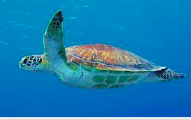

What are Sea Turtles?
This is my first paragraph about sea turtles. I think they are really cool.
Here is a picture of a Sea Turtle. 
- Sea Turtle
- a large marine reptile with a bony or leathery shell and flippers, coming ashore annually on sandy beaches to lay eggs.
- Adult
- A member of the population that has reached sexual maturity
- Alveolar
- Pertaining to the functional, or biting, part of the jaw.
- Arribada
- The emergence of an aggregation of ridley turtles onto nesting beaches.
Copulating pairs congregate in large numbers followed by mass nesting of females, generally over a period of several days
- Axillary Notch
- The notch in the front part of the shell into which the front leg fits.
- Basking
- A behavior that exposes the body, or a portion of the body, to the warmth of the sun.
- Beak
- The horny covering of the jaws, in turtles consisting of a single plate over each jaw surface. Also known as rhamphotheca or tomium.
This is my second paragraph about sea turtles.
Most species of sea turteles are endangered
For more informaton about sea turtles visit
World Wild Life
Life Cycle of a Sea Turtle
Sea Turtles a migrating species of animal
- Baby Turtles start out as eggs, layed in nest on the beach
- Juvenile Turtles head out to sea
- Adult Turtles, once fully grown go back to the beach where they were bon to mate and lay eggs
What kinds of Sea Turteles are there?
There are seven speceies of sea turtle. A few examples include:
- Leatherback Sea Turtles
- Green Sea Turtles
- Loggerhead Sea Turtles
Where do they live?
Sea turtles use both marine and terrestrial habitats during their life cycles
| Species of Turtle |
Location |
| Leafherback Sea Turtles |
Atlantic, Pacific, and Indian Oceans |
| Green Sea Turtles |
Atlantic, Pacific, and Indian Oceans, and in the Mediterranean Sea |
| Loggerhead Sea Turtles |
Atlantic, Pacific, and Indian Oceans, and in the Mediterranean Sea |
Endangered Animals
In the past 200 years the sea turtle population has faced many factors for recent depletion. Over hunting, habitat destruction,
and climate change, aull work against the survival of sea turtles.
Global Warming and Sea Turtles
How can you Help?